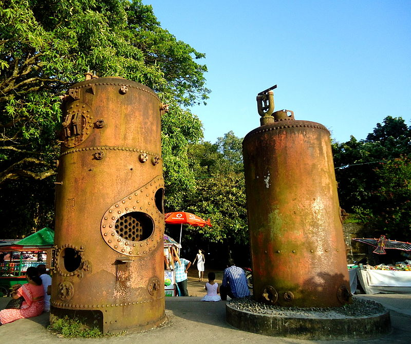

Kochi
A gaggle of islands interconnected by ferries, this cosmopolitan town has upmarket stores, art galleries and some of the finest heritage accommodations. In a true vintage-meets-future fashion, pubs, restaurants, shopping hubs and futuristic stores crowd Ernakulum, Jew Town and Fort Kochi while palaces, beaches, temples and heritage sites marking their presence too.

Mattancherry Palace
Popularly known as the Dutch Palace, the Mattancherry Palace is a Portuguese palace in Mattancherry, Kochi, in the state of Kerala. Mattancherry Palace is now a museum displaying paraphernalia belonging to the rajas of Kochi. Visit this destination to learn about the fascinating history of Kerala through the medium of irreplaceable artefacts and embellishments.

Fort Kochi
Fort Kochi is a seaside town in the south-western part of Main Kochi which is known for its old-world colonial charm. The place still holds on to every single cultural change it has gone through over the centuries. We can see remnants of British rule all over the country. But tourists flock hear all around the year to have a glimpse of how Portuguese or Dutch colonialism affected parts of our country